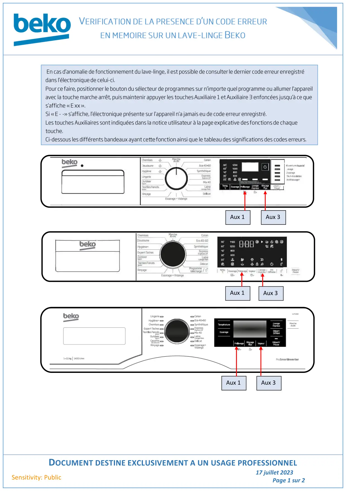
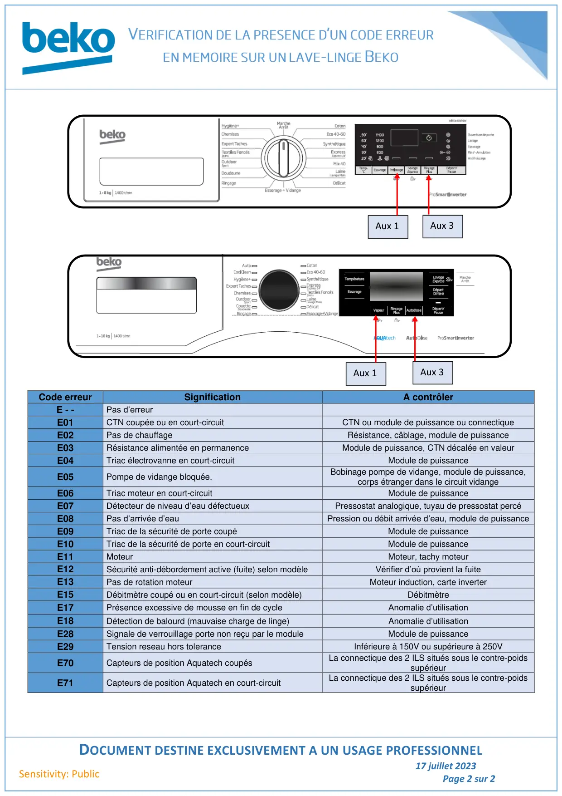

Accès codes erreur lave linge sans passer par prog test

DOCUMENT DESTINE EXCLUSIVEMENT A UN USAGE PROFESSIONNEL17 juillet 2023Page 1 sur 2Sensitivity: PublicAux 1Aux 3Aux 1Aux 3Aux 1Aux 3
1 / 2
DOCUMENT DESTINE EXCLUSIVEMENT A UN USAGE PROFESSIONNEL17 juillet 2023Page 2 sur 2Sensitivity: PublicCode erreurSignificationA contrôlerE - -Pas d’erreurE01CTN coupée ou en court-circuitCTN ou module de puissance ou connectiqueE02Pas de chauffageRésistance, câblage, module de puissanceE03Résistance alimentée en permanenceModule de puissance, CTN décalée en valeurE04Triac électrovanne en court-circuitModule de puissanceE05Pompe de vidange bloquée.Bobinage pompe de vidange, module de puissance,corps étranger dans le circuit vidangeE06Triac moteur en court-circuitModule de puissanceE07Détecteur de niveau d’eau défectueuxPressostat analogique, tuyau de pressostat percéE08Pas d’arrivée d’eauPression ou débit arrivée d’eau, module de puissanceE09Triac de la sécurité de porte coupéModule de puissanceE10Triac de la sécurité de porte en court-circuitModule de puissanceE11MoteurMoteur, tachy moteurE12Sécurité anti-débordement active (fuite) selon modèleVérifier d’où provient la fuiteE13Pas de rotation moteurMoteur induction, carte inverterE15Débitmètre coupé ou en court-circuit (selon modèle)DébitmètreE17Présence excessive de mousse en fin de cycleAnomalie d’utilisationE18Détection de balourd (mauvaise charge de linge)Anomalie d’utilisationE28Signale de verrouillage porte non reçu par le moduleModule de puissanceE29Tension reseau hors toleranceInférieure à 150V ou supérieure à 250VE70Capteurs de position Aquatech coupésLa connectique des 2 ILS situés sous le contre-poidssupérieurE71Capteurs de position Aquatech en court-circuitLa connectique des 2 ILS situés sous le contre-poidssupérieurAux 1Aux 3Aux 1Aux 3
2 / 2